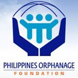
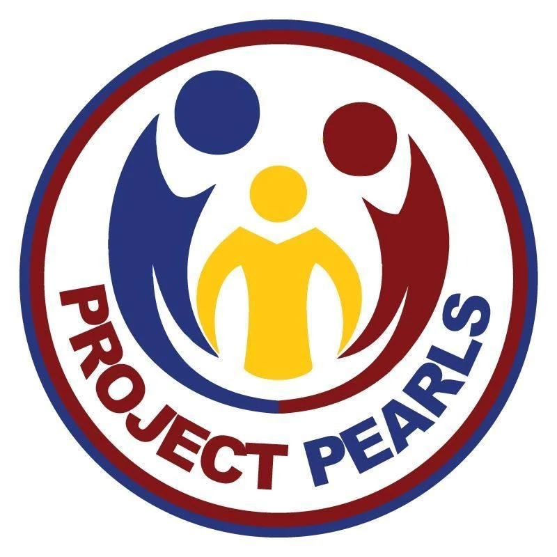

"Empower change: lend a hand, lift a spirit."

Caritas Manila, a non-profit organization that serves as the lead social service and development ministry of the Catholic Church of the Philippines.
The Philippines Orphanage Foundation is a faith-based ministry started with the hope of rescuing and transforming the lives of Filipino orphans.
No child should be hungry for nutrition, education, shelter, medical services, and opportunities to achieve their full potential.